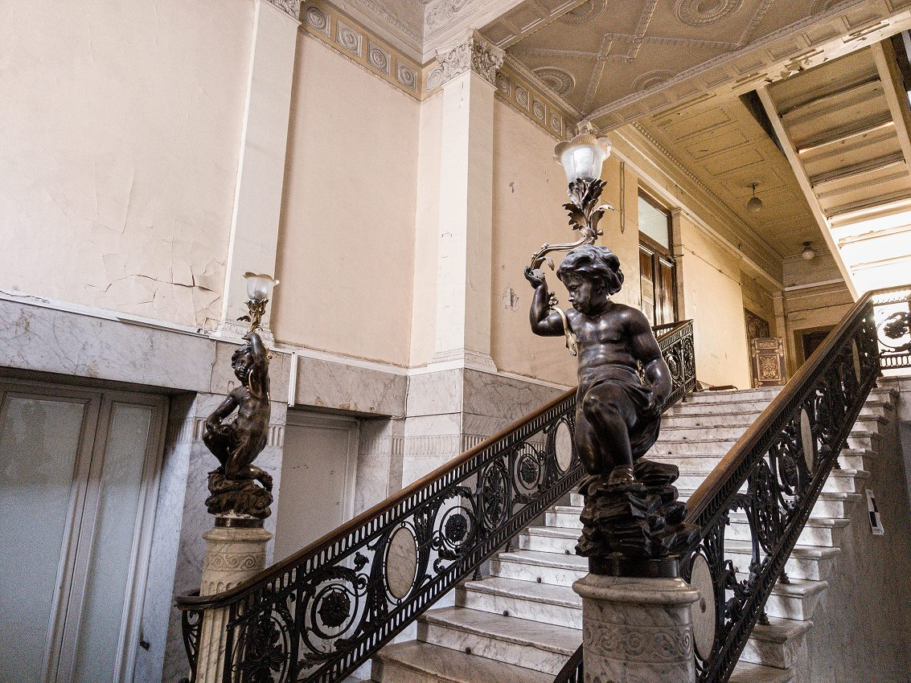
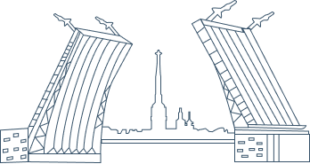
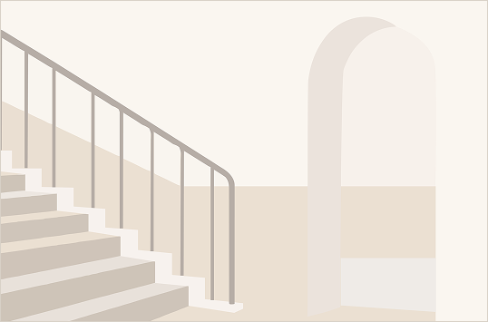

Архитектурные маршруты по Санкт-Петербургу
Исследуйте парадные Санкт-Петербурга через маршруты, адреса и практические подсказки
Находите интересные объекты, изучайте их историю и планируйте удобные прогулки по городу.
Начать маршрутКаталог парадных
Популярные объекты
Подборка наиболее известных и визуально выразительных парадных Санкт-Петербурга, которые позволяют познакомиться с архитектурой, историей и атмосферой старого города.
Карта
Парадные на карте города
Подборка наиболее известных и визуально выразительных парадных Санкт-Петербурга, которые позволяют познакомиться с архитектурой, историей и атмосферой старого города.
Открыть карту
Объект 1
Доходный дом страхового общества «Саламандра»
Гороховая улица, 6
Атмосферная парадная с декоративными деталями и выразительной лестницей.
ПодробнееМаршруты
Готовые варианты прогулок
В разделе собраны маршруты разной продолжительности и тематики, которые помогают изучать парадные Санкт-Петербурга последовательно и удобно.
Практическая информация
Что важно знать перед посещением
Полезные рекомендации, которые помогут заранее подготовиться к посещению парадных.
Часы посещения
Перед визитом уточняйте режим доступа и возможные ограничения на вход.
Правила поведения
Соблюдайте тишину, не мешайте жителям и аккуратно относитесь к пространству.
Что взять с собой
Удобную обувь, телефон для навигации и камеру для фотофиксации деталей.
Полезные пометки
На сайте отмечены адрес, вход, примерное время осмотра и особенности объекта.
О нас
О проекте “Внутри Петербурга”
Проект помогает собрать в одном месте информацию о парадных Санкт-Петербурга: адреса, маршруты, ориентиры, особенности посещения и визуальные материалы для предварительного знакомства с объектами.

